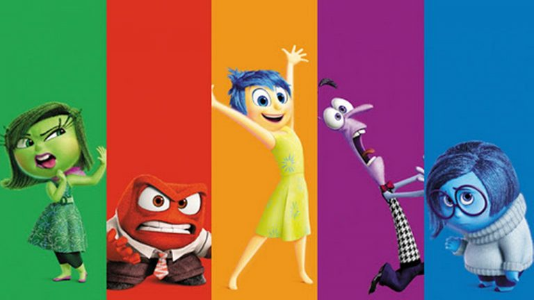

Las emociones son una parte esencial de quienes somos y todas cumplen
una función importante en nuestra vida.
No hay emociones buenas o malas: cada una nos enseña algo, ya sea impulsarnos, protegernos
o ayudarnos a reflexionar.
Aprender a reconocerlas y expresarlas sin juzgarnos
nos permite conocernos mejor, tomar decisiones más conscientes y crecer como personas,
recordando siempre que no estamos solos en lo que sentimos.